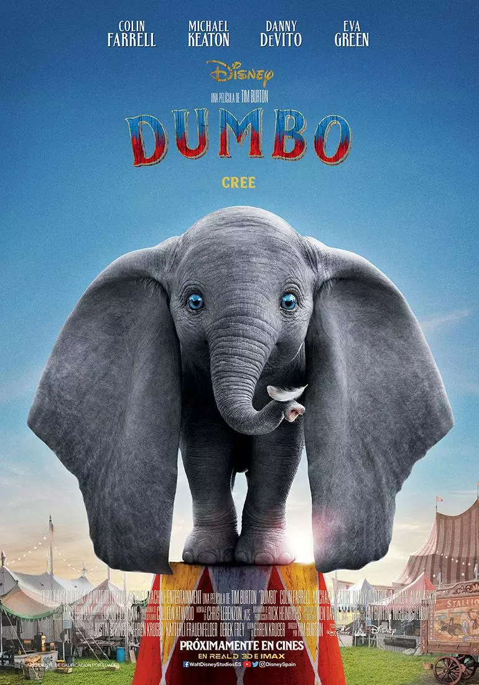

La película comienza cuando las cigüeñas traen varios animales bebés a los animales del circo Casey Jr. Al día siguiente mientras los animales del circo son transportados en un tren del circo, la elefanta Jumbo recibe a su cría de una cigüeña. El bebé elefante se convierte rápidamente en el centro de las burlas de los otros elefantes debido a sus grandes orejas, y lo llaman "Dumbo". Una vez que el circo ya está instalado, Jumbo pierde la paciencia con un grupo de muchachos maleducados que se burlaban de Dumbo, como resultado, es catalogada como animal peligroso. La elefanta y Dumbo son separados. Sin su madre, Dumbo se queda solo. El ratón Timothy se convierte en su mejor amigo. El Maestro de Ceremonias hace que Dumbo participe en el número de la pirámide de los elefantes, haciendo que se coloque en la parte superior, pero Dumbo hace que el número salga mal, hiriendo a los otros y derribando la gran carpa. Dumbo es obligado a cambiar de actividad y se convierte en payaso. Su número finaliza con el elefantito cayendo en una tina de agua con jabón. A pesar de conseguir popularidad y fama, los otros elefantes y el público se burlaban de Dumbo. Para animar a Dumbo, Timothy lo lleva a visitar a su madre. En el camino de regreso Timothy y Dumbo beben agua de un cubo en el que accidentalmente había caído una botella de champán que bebían los payasos. Ambos se emborrachan y ven alucinaciones con los elefantes rosa. A la mañana siguiente, Dumbo y Timothy se despiertan en un árbol. Timothy se pregunta cómo llegaron al árbol, y concluye que Dumbo voló hasta allí con sus grandes orejas como alas. Con la ayuda de un grupo de burlones cuervos, Timothy es capaz de hacer que Dumbo vuelva a volar de nuevo, usando el truco psicológico de la "pluma mágica" para aumentar su confianza. De regreso al circo, Dumbo debe realizar un nuevo número: saltar desde una plataforma mucho más alta. En el camino hacia abajo, a un aterrorizado Dumbo se le cae la pluma. Timothy lo tranquiliza y le dice que la pluma nunca fue mágica, que todavía es capaz de volar. Gracias a ello, Dumbo es capaz de volar alrededor del circo, mientras el público atónito mira con asombro. Después de esta actuación, Dumbo se convierte en una sensación en los medios, Timothy se convierte en su representante, y a Dumbo y su madre se les da un vagón particular en el tren del circo.
